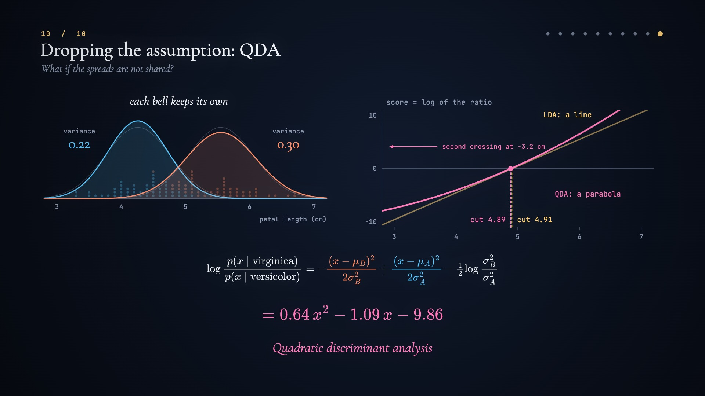
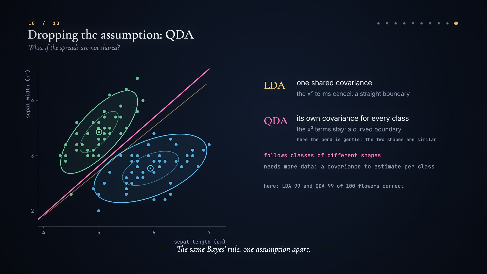

LDA from the ground up
These are 100 real iris flowers of two species. A new flower turns up. Which species is it? Drag the black flower around and see what the classifier says.
That line is linear discriminant analysis (LDA). This page builds it slowly, first with one measurement and then with two. After that it shows how LDA relates to two methods you may already know, PCA and logistic regression, and ends with a short Bayesian note.
The data is the iris set that Ronald Fisher used in 1936 when he invented the method: 50 flowers each of three species, with four measurements per flower.
The flowers and what was measured
An iris has three large outer parts called sepals and three smaller inner parts called petals. The botanist Edgar Anderson measured the length and the width of one sepal and one petal on every flower. Those are the four numbers.
1One measurement, one cut
Start as simply as possible. Keep only two species, versicolor and virginica, and only one measurement: the length of the petal. Each dot below is one real flower.
Virginica petals are longer on the whole, but the two groups overlap. The simplest classifier is a cut: call everything shorter versicolor and everything longer virginica.
Try it. Move the cut and find the place with the fewest mistakes. Ringed dots are on the wrong side.
The best you can do is 7 mistakes out of 100, with the cut anywhere from about 4.75 to 4.9 cm. We found that by trial and error. The rest of this section finds the same cut by reasoning, because reasoning still works when there are fifty measurements and no picture to look at.
Summarise each species with a bell curve
Describe each species by two numbers. Its centre is the average petal length. Its spread is how far the lengths typically fall from that average (the standard deviation). A centre and a spread define a bell curve, a Gaussian.
The two species have different centres, and that difference is what we will use. Their spreads, 0.47 and 0.55 cm, are nearly the same. LDA makes them exactly the same.
The one rule of LDA
Every class gets its own centre. All classes share one spread.
The shared spread is made in two moves, and they are the same two moves everywhere on this page. First measure each class’s own spread. Then average them. (The average is taken on the variances, which are the spreads squared.)
From here on, a class’s own spread is only an ingredient. Every curve, every formula and every figure below uses the shared one.
A new flower arrives
Now a new flower has petal length \(x\). The height of each bell curve at \(x\) says how typical that length is for each species. This is the likelihood \(p(x\mid\text{species})\). Bayes’ rule turns the two heights into a probability for each species:
$$p(\text{virginica}\mid x)=\frac{\pi_B\,p(x\mid B)}{\pi_A\,p(x\mid A)+\pi_B\,p(x\mid B)}$$Here A is versicolor and B is virginica, and \(\pi_A,\pi_B\) are the priors: how common each species is before we measure anything. Start with half and half.
Try it. Slide the flower’s petal length and follow the arithmetic underneath.
The answer flips where the two curves have the same height. That crossing point is the cut.
Where exactly do the curves cross?
Derivation: the cut for one measurement
- Say virginica (B) when its prior × likelihood is larger. $$\pi_B\,p(x\mid B)\;\gt\;\pi_A\,p(x\mid A)$$
- Write out the two bell curves and take logs. Both use the shared spread \(\sigma\) (0.51 cm), so both have the same factor \(1/(\sigma\sqrt{2\pi})\) in front, and it drops out. $$\log\pi_B-\frac{(x-\mu_B)^2}{2\sigma^2}\;\gt\;\log\pi_A-\frac{(x-\mu_A)^2}{2\sigma^2}$$
- Expand the squares. Both sides contain \(-x^2/2\sigma^2\), so it cancels. What is left has \(x\) only to the first power. This cancellation is the whole reason for the shared spread. $$x\,\frac{\mu_B-\mu_A}{\sigma^2}\;-\;\frac{\mu_B^2-\mu_A^2}{2\sigma^2}\;+\;\log\frac{\pi_B}{\pi_A}\;\gt\;0$$
- Solve for \(x\), using \(\mu_B^2-\mu_A^2=(\mu_B-\mu_A)(\mu_B+\mu_A)\). $$x\;\gt\;\underbrace{\frac{\mu_A+\mu_B}{2}}_{\text{halfway between the centres}}\;-\;\underbrace{\frac{\sigma^2}{\mu_B-\mu_A}\log\frac{\pi_B}{\pi_A}}_{\text{shift from the priors}}$$
- Numbers, with equal priors. \(\log 1=0\), so the cut is halfway between the two centres. $$x^\ast=\frac{4.26+5.55}{2}\approx4.91\text{ cm}$$
The reasoning gives 4.91 cm. Go back to the first figure and set the cut to 4.90: 7 mistakes, the best possible. That is LDA with one measurement.
Why linear? Look at step 3 again. With the flower numbers it reads \(5.02\,x-24.62\gt0\): a number times \(x\), plus a number. An expression with \(x\) only to the first power is called linear, and its graph is a straight line. A straight line crosses zero once, so there is exactly one cut. That is the L in LDA.
Try it on one flower. A petal 4.8 cm long scores \(5.02\times4.8-24.62\approx-0.5\). The score is negative, so the flower is called versicolor, which agrees with the picture: 4.8 is just left of the cut at 4.91. Section 5 turns this score into a probability.
How far apart are the two species?
One number says how well any cut can work: the gap between the centres, counted in spreads.
$$\text{separation}=\frac{\text{gap between the centres}}{\text{shared spread}}=\frac{5.55-4.26}{0.51}\approx2.5\text{ spreads}$$At 2.5 spreads the two bell curves overlap a little, which is why 7 flowers end up on the wrong side. Section 2 is a search for a view of the flowers in which this number is as large as possible.
What if one species is rare?
Suppose only one flower in five in this meadow is virginica. Then a borderline flower is more likely to be versicolor, and the cut should move toward virginica. The prior does exactly that.
So far. Give each class its own centre and all classes one shared spread. Apply Bayes’ rule. The squared terms cancel and the rule is a single cut, halfway between the centres, shifted by the priors.
2Two measurements: look from the right direction
Now take two measurements per flower. To make the point clearly this section switches to a different pair of species and a different part of the flower: setosa against versicolor, using the length and the width of the sepal.
Used alone, neither measurement works well. The best cut on sepal length makes 11 mistakes. The best cut on sepal width makes 16. Yet in the picture the two species are clearly apart. They are separated along a slanted direction.
So choose a direction, and drop each flower straight onto it, like a shadow. Now every flower is one number again, its position along the line, and section 1 applies.
For every direction the figure also finds the best cut on the shadows, the one with the fewest mistakes, exactly as in section 1. On the left it is the short black mark across the line, and flowers whose shadows fall on the wrong side of it are ringed. On the right it is the dashed line in the histogram.
Try it. Press “Sepal length only”, then “Sepal width only”, and count the rings. Then turn the line and find the direction where the rings disappear.
Near 130° the shadows separate completely: one cut gets all 100 flowers right, using one number per flower. Two overlapping measurements combine into one good one.
Scoring a direction without trying them all
First, a name for the direction. Call it \(w\). It is a pair of numbers, one weight for each measurement, and a flower’s shadow is the weighted sum
$$z \;=\; w_1\times\text{sepal length}\;+\;w_2\times\text{sepal width}.$$For a line at angle \(\theta\), \(w=(\cos\theta,\ \sin\theta)\). At 0° that is \(w=(1,0)\), so the shadow is the sepal length alone. At 90° it is \(w=(0,1)\), the sepal width alone. Turning the line in the figure above was choosing \(w\).
Worked example: one flower, three directions
Take the first setosa in the data. Its sepal is 5.1 cm long and 3.5 cm wide, so \(x=(5.1,\ 3.5)\). Its shadow is \(z=w_1\times5.1+w_2\times3.5\). The flower does not change. Only \(w\) does.
| Direction | \(w=(\cos\theta,\ \sin\theta)\) | Shadow \(z=w_1x_1+w_2x_2\) |
|---|---|---|
| 0° | (1, 0) | \(1\times5.1+0\times3.5=5.1\), the sepal length |
| 60° | (0.50, 0.87) | \(0.50\times5.1+0.87\times3.5\approx5.6\) |
| 90° | (0, 1) | \(0\times5.1+1\times3.5=3.5\), the sepal width |
| 129° | (−0.63, 0.78) | \(-0.63\times5.1+0.78\times3.5\approx-0.5\) |
Do the same sum for all 100 flowers and you have the pile of shadows for that direction. Every direction gives a different pile. The question for the rest of this section is which \(w\) gives the two species the piles that are easiest to tell apart.
Once the flowers are shadows on a line, we are back in section 1: two piles of numbers, each with its own centre, and one shared spread. Fisher’s score for a direction is the separation from section 1, squared:
$$J(w)=\Big(\frac{\text{gap between the two shadow centres}}{\text{shared spread of the shadows}}\Big)^{2}=\frac{(\text{gap})^2}{\text{shared variance}}$$Both parts matter. A big gap is no use if the piles are wide enough to overlap anyway.
The figure shows every piece. The two centres are marked among the flowers and dropped onto the line. On the right, the gap between their shadows is the black bar. Each pile has a bell curve, and both curves use the one shared spread, made by the rule from section 1: each pile’s own variance, then the average.
Try it. Turn the line and watch the gap and the shared spread change. Then press the two buttons: the line joining the centres has the bigger gap, but the highest score has a much smaller spread.
Sepal length alone separates the species by 2.1 spreads, and sepal width alone by 1.9. The best direction (129°) reaches 4.5. The obvious guess, the line joining the two centres (145°), has a slightly bigger gap but a wider spread, and reaches 4.0.
Here are the ingredients for four directions. In each one the shadows of a species form a pile, the pile has its own variance, and the two variances are averaged and square-rooted into the shared spread, exactly as in section 1.
| Direction | Gap | Variance, setosa | Variance, versicolor | Average | Shared spread | Separation |
|---|---|---|---|---|---|---|
| Sepal length only (0°) | 0.93 | 0.12 | 0.26 | 0.19 | 0.44 | 2.1 |
| Sepal width only (90°) | 0.66 | 0.14 | 0.10 | 0.12 | 0.34 | 1.9 |
| Line joining the centres (145°) | 1.14 | 0.04 | 0.13 | 0.08 | 0.29 | 4.0 |
| Best direction (129°) | 1.10 | 0.04 | 0.08 | 0.06 | 0.24 | 4.5 |
Read the last two rows together. The line joining the centres has the biggest gap there is, 1.14. But the versicolor cloud is stretched along that line, so its pile is wide: variance 0.13. Tilt the line to 129° and the gap barely changes, 1.14 to 1.10, about 4 per cent less. The versicolor variance falls from 0.13 to 0.08, and the shared spread falls from 0.29 to 0.24, about 15 per cent less. A slightly smaller gap divided by a much smaller spread is a bigger separation.
We found 129° by turning the line and looking. That is brute force, and it only works here because a direction in a plane is one angle. With four measurements a direction needs three angles, and with a hundred measurements there are far too many to try. So the next step is a formula for the best \(w\), and then the same formula worked through with numbers.
Derivation: the best direction
- What we want. A direction \(w=(w_1,w_2)\) that makes the score as large as possible: $$J(w)=\frac{(\text{gap between the two shadow centres})^2}{\text{shared variance of the shadows}}$$ Here A is setosa and B is versicolor. First write the gap and the variance in terms of \(w\).
- The shadow of one flower. A flower is a pair of numbers \(x=(x_1,x_2)\), its sepal length and width. Its shadow is the weighted sum $$z=w_1x_1+w_2x_2=w^\top x$$ The symbol \(w^\top x\) is only shorthand for that sum.
- The shadow of a centre. Average the shadows of all the flowers in one class. The average of weighted sums is the weighted sum of the averages, so the centre of a pile is the shadow of the class centre \(\mu\): $$\text{centre of pile A}=w^\top\mu_A\qquad\text{centre of pile B}=w^\top\mu_B$$
- The gap. Subtract one from the other. Write \(d=\mu_B-\mu_A\) for the arrow from one centre to the other. $$\text{gap}=w^\top\mu_B-w^\top\mu_A=w^\top(\mu_B-\mu_A)=w^\top d$$
- One class’s own variance. With two measurements, a class’s spread is no longer one number. It is a small table of three, its covariance matrix: how much length varies, how much width varies, and how much they vary together. Call class A’s own table \(S_A\). $$S_A=\begin{pmatrix}\text{var(length)}&\text{cov}\\ \text{cov}&\text{var(width)}\end{pmatrix}$$ The variance of pile A uses all three: $$w_1^2\,\text{var(length)}+2\,w_1w_2\,\text{cov}+w_2^2\,\text{var(width)}$$ which in shorthand is \(w^\top S_A\,w\).
- The shared variance. Apply the one rule: take each class’s own, then average. The two tables average into one, the shared covariance \(\Sigma\). $$\tfrac12\big(w^\top S_A\,w+w^\top S_B\,w\big)=w^\top\,\underbrace{\tfrac12(S_A+S_B)}_{\Sigma}\,w=w^\top\Sigma\,w$$
- The score in symbols. Put steps 4 and 6 into the fraction. $$J(w)=\frac{(w^\top d)^2}{w^\top\Sigma\,w}$$ Doubling \(w\) multiplies the top and the bottom by 4, so \(J\) does not change. Only the direction of \(w\) matters, not its length.
- Where is J largest? At the best direction, nudging \(w\) a little does not change \(J\): its slope is zero. For a fraction, slope zero means $$(\text{slope of top})\times\text{bottom}=\text{top}\times(\text{slope of bottom})$$
- The two slopes. These work like the ordinary rules \((ax)^2\to2a(ax)\) and \(sx^2\to2sx\), one for each weight. $$\text{slope of }(w^\top d)^2=2\,(w^\top d)\,d\qquad\text{slope of }w^\top\Sigma\,w=2\,\Sigma\,w$$
- Put them in. $$2\,(w^\top d)\,d\;\,(w^\top\Sigma\,w)=(w^\top d)^2\;\,2\,\Sigma\,w$$ Cancel the 2 and one \((w^\top d)\) from each side. $$\underbrace{(w^\top\Sigma\,w)}_{\text{a number}}\;d=\underbrace{(w^\top d)}_{\text{a number}}\;\Sigma\,w$$
- Read it. Both brackets are plain numbers. So the equation says: \(\Sigma\,w\) is some number times \(d\). The vector \(\Sigma\,w\) points along the line joining the centres. $$\Sigma\,w\;\propto\;d$$
- Solve for w. Undo the \(\Sigma\) by multiplying both sides by its inverse. The unknown number does not matter, because only the direction counts (step 7). $$w\;\propto\;\Sigma^{-1}d=\Sigma^{-1}(\mu_B-\mu_A)$$ In one dimension this is the gap divided by the shared variance, which is the number in front of \(x\) in section 1.
- Now the numbers: the centres. From the 50 setosa and 50 versicolor flowers, as (sepal length, sepal width) in cm: $$\mu_A=(5.006,\ 3.428)\qquad\mu_B=(5.936,\ 2.770)$$ $$d=\mu_B-\mu_A=(0.930,\ -0.658)$$ Versicolor sepals are longer and narrower. The direction of \(d\) on its own is the 145° line.
- Each class’s own covariance, then the average. $$S_A=\begin{pmatrix}0.122&0.097\\0.097&0.141\end{pmatrix}\qquad S_B=\begin{pmatrix}0.261&0.083\\0.083&0.097\end{pmatrix}$$ $$\Sigma=\tfrac12(S_A+S_B)=\begin{pmatrix}0.1914&0.0904\\0.0904&0.1187\end{pmatrix}$$ The off-diagonal 0.0904 is positive: within each species, longer sepals tend to be wider. That is the slant of the two clouds.
- The inverse. For a 2 × 2 matrix, swap the diagonal, flip the sign of the other two, and divide by the determinant. $$\det\Sigma=0.1914\times0.1187-0.0904^2=0.01455$$ $$\Sigma^{-1}=\frac{1}{0.01455}\begin{pmatrix}0.1187&-0.0904\\-0.0904&0.1914\end{pmatrix}=\begin{pmatrix}8.16&-6.21\\-6.21&13.16\end{pmatrix}$$
- The best direction. $$w=\Sigma^{-1}d=\begin{pmatrix}8.16\times0.930+(-6.21)\times(-0.658)\\-6.21\times0.930+13.16\times(-0.658)\end{pmatrix}\approx\begin{pmatrix}11.7\\-14.4\end{pmatrix}$$ Shrink it to length 1 (divide by \(\sqrt{11.7^2+14.4^2}=18.6\)): $$w=(0.63,\ -0.78)$$ That is the 129° line. The opposite arrow \((-0.63,\ 0.78)\) is the same line.
- Check against the figure. With this \(w\): $$\text{gap}=w^\top d=0.63\times0.930+(-0.78)\times(-0.658)=1.10$$ $$\text{shared variance}=w^\top\Sigma\,w=0.059\qquad\text{shared spread}=\sqrt{0.059}=0.24$$ $$\text{separation}=\frac{1.10}{0.24}\approx4.5\text{ spreads}\qquad J\approx4.5^2\approx20$$ Press “Highest score” in the figure: it shows the same gap and spread, and with more decimals J = 20.35.
- In words. Start from the line joining the centres (145°). Then correct it by the shape of the clouds, which is what \(\Sigma^{-1}\) does. That correction is the tilt from 145° to 129°.
A note for when you read other texts. Fisher’s own version adds the two covariances instead of averaging them, and calls the sum \(S_W\) (“within the classes”), so \(S_W=2\Sigma\). That halves every value of \(J\) and leaves the best direction exactly where it is. Texts also write \(S_B=d\,d^\top\) (“between the classes”) and state the result as \(S_B\,w=J\,S_W\,w\). It is the same answer.
So far. With two measurements, project the flowers onto one direction and cut there. The best direction is \(\Sigma^{-1}(\mu_B-\mu_A)\): the line joining the centres, corrected by the shared covariance. Nothing here used Bayes’ rule.
3The same answer from bell curves
Section 1 used bell curves and Bayes’ rule. Section 2 used shadows and no probabilities at all. Now do section 1 again with two measurements, and see that it lands on the direction section 2 found.
Two routes to the same line
Route 1, Fisher (section 2). Project the flowers onto a direction \(w\). Choose the \(w\) whose two piles are the most spreads apart. No probabilities are involved.
Route 2, bell curves (this section). Give each species a bell-shaped hill and ask which species is more probable for a new flower. No projection is mentioned.
The claim is that route 2 ends in the same \(w\), and that its rule turns out to be a projection after all.
A bell curve in two dimensions is a hill. Its centre is the class centre \(\mu\). Its footprint is an ellipse, and the shape of that ellipse is the covariance matrix. The one rule applies unchanged: each class has its own centre, and both classes share one covariance \(\Sigma\), the average of their own two.
Try it. Step through the figure. At step 3, compare the thin dashed ellipses (each class’s own shape) with the solid ones (the shared shape). At the last step, drag the new flower.
The boundary is a straight line, and its direction \(w\) is the direction Fisher found. Here is why.
Derivation: the LDA rule with two or more measurements
- The bell curve for class \(k\), with its own centre \(\mu_k\) and the shared covariance \(\Sigma\). The bracket in the exponent is the squared distance from the centre, measured in spreads. $$p(x\mid k)=\frac{1}{2\pi\,|\Sigma|^{1/2}}\exp\!\Big(-\tfrac12(x-\mu_k)^\top\Sigma^{-1}(x-\mu_k)\Big)$$
- Score each class by the log of prior × likelihood. The factor in front is the same for every class, because \(\Sigma\) is shared, so leave it out. $$\log\pi_k-\tfrac12(x-\mu_k)^\top\Sigma^{-1}(x-\mu_k)$$
- Expand the bracket. The term \(-\tfrac12x^\top\Sigma^{-1}x\) is the same for every class, so drop it. This is the \(x^2\) cancelling, exactly as in section 1. What is left is linear in \(x\): $$\delta_k(x)=x^\top\Sigma^{-1}\mu_k-\tfrac12\mu_k^\top\Sigma^{-1}\mu_k+\log\pi_k$$
- With two classes, choose B when \(\delta_B(x)-\delta_A(x)\gt0\). Subtracting gives \(w^\top x+b\gt0\) with $$w=\Sigma^{-1}(\mu_B-\mu_A),\qquad b=-\tfrac12(\mu_A+\mu_B)^\top w+\log\frac{\pi_B}{\pi_A}$$
- The numbers are the ones from section 2 (A setosa, B versicolor, equal priors): $$w=(11.67,\ -14.43),\qquad b=-19.12$$ So the rule is: compute \(11.67\times\text{length}-14.43\times\text{width}-19.12\). Positive means versicolor. A longer sepal pushes toward versicolor, a wider one toward setosa.
This \(w\) is exactly Fisher’s \(\Sigma^{-1}(\mu_B-\mu_A)\) from section 2. LDA can be read as a projection or as a probability model, and both give the same line. The probability model adds two things: where along that direction to cut (\(b\)), and a probability for every flower.
Why the two routes agree: read the boundary in one dimension first
- The boundary from Bayes’ rule. With equal priors the two classes tie where \(\delta_B(x)=\delta_A(x)\). Written out from step 3, that is $$x^\top\Sigma^{-1}(\mu_B-\mu_A)=\tfrac12\big(\mu_B^\top\Sigma^{-1}\mu_B-\mu_A^\top\Sigma^{-1}\mu_A\big)$$ This is how most textbooks state LDA. It looks heavy, so read it with one measurement first.
- One measurement. Now \(x\), \(\mu_A\) and \(\mu_B\) are plain numbers, and \(\Sigma\) is the shared variance \(\sigma^2\), so \(\Sigma^{-1}\) is \(1/\sigma^2\). $$x\,\frac{\mu_B-\mu_A}{\sigma^2}=\frac{\mu_B^2-\mu_A^2}{2\sigma^2}$$
- Solve it. Multiply both sides by \(\sigma^2\) and use \(\mu_B^2-\mu_A^2=(\mu_B-\mu_A)(\mu_B+\mu_A)\). $$x=\frac{\mu_A+\mu_B}{2}$$ Halfway between the centres. This is the cut of section 1, 4.91 cm for the petal lengths.
- Back to several measurements: the left side. Since \(w=\Sigma^{-1}(\mu_B-\mu_A)\), the left side is $$x^\top\Sigma^{-1}(\mu_B-\mu_A)=w^\top x$$ the shadow of the flower on Fisher’s direction.
- The right side. The same difference-of-squares step works with matrices, because \(\Sigma^{-1}\) is symmetric. $$\tfrac12\big(\mu_B^\top\Sigma^{-1}\mu_B-\mu_A^\top\Sigma^{-1}\mu_A\big)=\tfrac12(\mu_A+\mu_B)^\top\Sigma^{-1}(\mu_B-\mu_A)=w^\top\,\frac{\mu_A+\mu_B}{2}$$ the shadow of the point halfway between the two centres.
- Put the two sides together. $$\underbrace{w^\top x}_{\text{shadow of the flower}}=\underbrace{w^\top\,\tfrac12(\mu_A+\mu_B)}_{\text{shadow of the midpoint}}$$ Bayes’ rule says: project the flower onto \(w\) and cut at the shadow of the midpoint. That is route 1. And with one measurement there is nothing to project, so it reduces to “cut halfway between the centres”.
Route 2 is a projection too. Look at the rule \(w^\top x+b\gt0\). The term \(w^\top x\) is the shadow of the flower on the direction \(w\), the same weighted sum as in section 2. So the rule says: project the flower onto \(w\), and compare that one number with a threshold. With \(w\) shrunk to length 1, \(w=(0.63,\ -0.78)\), the rule reads
$$0.63\times\text{length}-0.78\times\text{width}\;\gt\;1.03$$and 1.03 is the shadow of the point halfway between the two centres. The flowers whose shadow is exactly 1.03 form a straight line at right angles to \(w\). That line is the boundary in the figure. It puts 99 of the 100 flowers on the correct side. (Section 2 reached all 100 because it searched for the best cut on the shadows. Here the cut is fixed halfway between the centres, and one setosa falls just across it.)
More measurements
Nothing above was special to two measurements. With three, each flower is a point in space and \(w\) has three weights. With four, \(w\) has four, and we can no longer draw the cloud. The formula \(w=\Sigma^{-1}(\mu_B-\mu_A)\) is unchanged, and \(w^\top x\) is still one number per flower. LDA always takes two classes from however many measurements down to one number.
Go back to the harder pair from section 1, versicolor against virginica, and add measurements one at a time. Each row is LDA with the cut halfway between the two centres.
| Measurements used | \(w\) | Mistakes out of 100 | Separation |
|---|---|---|---|
| Petal length | (5.02) | 8 | 2.5 |
| Petal length, petal width | (2.82, 9.47) | 6 | 3.2 |
| Sepal length, petal length, petal width | (−4.70, 7.27, 9.04) | 3 | 3.6 |
| All four (sepal length, sepal width, petal length, petal width) | (−3.63, −5.69, 7.11, 12.64) | 3 | 3.8 |
The first row is section 1: with one measurement \(w\) is a single number, the 5.02 in front of \(x\). (The cut at 4.91 makes 8 mistakes. The best possible cut, found by trial, makes 7.) Each added measurement gives \(w\) one more weight and pulls the two piles further apart.
All three species
More than two classes changes nothing. Compute \(\delta_k(x)\) for every class and pick the largest. Here are all 150 flowers, with petal length and width. Each species has its own centre, and all three share one covariance, the average of the three.
In Fisher’s view, two classes need one direction, and three classes need two. In general \(K\) classes need at most \(K-1\) directions, and never more than the number of measurements. Each direction is another \(w\), so each flower becomes \(K-1\) numbers. With all four measurements and all three species, that rule classifies 147 of the 150 flowers correctly.
So far. LDA: one bell-shaped hill per class, each with its own centre, all with the same footprint. The boundary is straight, with direction \(\Sigma^{-1}(\mu_B-\mu_A)\).
4How this relates to PCA
PCA also picks a direction and projects the data onto it. If you have met PCA before, section 2 probably felt familiar. The difference is what each method looks for, and it comes down to one thing: PCA never sees the labels.
Without labels there are no classes, so there is no gap and no shared spread. All PCA can measure is how spread out the whole cloud of shadows is. It picks the direction where that total spread is largest.
Here are the same sepals as in section 2. The labels start hidden, which is what PCA sees.
Try it. Press “PCA direction”. Then untick “Hide the labels” and look at the histogram. Then press “LDA direction”.
PCA picks 163°, close to “sepal length only”, because length is the measurement that varies most. That is a reasonable summary of the flowers, but the best cut on it gets 94 of 100 right. LDA’s 129° gets all 100.
One identity connects them
With the labels shown, the figure splits the total variance of the shadows into two parts:
$$\underbrace{\text{total}}_{\text{PCA maximises this}}\;=\;\underbrace{\text{within}}_{\text{the shared variance}}\;+\;\underbrace{\text{between}}_{(\text{gap}/2)^2}$$“Within” is the shared variance inside the classes, the bottom of Fisher’s score. “Between” comes only from the gap between the two centres.
PCA maximises the sum and cannot tell the two parts apart. LDA wants the second part large and the first part small. When most of the total comes from the gap between the classes, the two methods agree. When most of it comes from spread inside the classes, PCA is led astray.
A made-up example makes the worst case plain. The two classes are long and parallel.
Try it. Press “PCA direction”, then show the labels, then press “LDA direction”.
Made-up example
The cloud is longest along the two cigars, so PCA projects along them and the classes land on top of each other. Almost all of the total variance there is spread within the classes. LDA looks across the cigars, where the total is small but nearly all of it is gap.
| PCA | LDA | |
|---|---|---|
| Uses the labels | No | Yes |
| Looks for | the direction of largest total spread | the direction where the classes are most spreads apart |
| Good for | summarising or compressing data | telling known classes apart |
| Directions it can give | as many as there are measurements | number of classes minus one |
The last row: with \(K\) classes there are \(K\) class centres, and \(K\) points span at most \(K-1\) dimensions (two points make a line, three a plane). So LDA can also be used to reduce dimensions, down to \(K-1\), keeping the class separation.
So far. PCA and LDA both project. PCA maximises total spread and ignores the labels. LDA uses the labels to split that spread into within and between, and maximises between over within.
5How this relates to logistic regression
Go back to section 1 and the new flower sliding along the petal-length axis. At 4 cm the probability of virginica was near 0, at 4.91 cm it was exactly one half, and at 6 cm it was near 1. Plot that probability against petal length and you get an S-shaped curve.
That curve has a name, the sigmoid, and it is the curve logistic regression fits. So the two methods can be drawn on the same picture. The dots are the same 100 flowers: versicolor along the bottom at 0, virginica along the top at 1.
Try it. Slide the new flower and compare the two probabilities. Then compare the two rows of weights under the figure.
The two curves have the same shape and cross one half at almost the same place: 4.91 cm for LDA, 4.86 cm for logistic regression. The fitted one is steeper, so it is more confident on either side of the cut. LDA’s steepness is fixed by a formula, the gap divided by the shared variance. Logistic regression is free to choose it, and here the flowers near the cut are split a little more cleanly than two bell curves predict.
Here is why LDA’s probability has to be a sigmoid.
Derivation: LDA’s probability is a sigmoid
- Bayes’ rule for class B, from section 1. $$p(B\mid x)=\frac{\pi_B\,p(x\mid B)}{\pi_B\,p(x\mid B)+\pi_A\,p(x\mid A)}$$
- Divide the top and the bottom by the top. $$p(B\mid x)=\frac{1}{1+e^{-a(x)}}\qquad\text{with}\qquad a(x)=\log\frac{\pi_B\,p(x\mid B)}{\pi_A\,p(x\mid A)}$$ The function \(1/(1+e^{-a})\) is the sigmoid.
- We already worked out \(a(x)\). It is the left side of step 3 in section 1: $$a(x)=\frac{\mu_B-\mu_A}{\sigma^2}\,x-\frac{\mu_B^2-\mu_A^2}{2\sigma^2}+\log\frac{\pi_B}{\pi_A}$$ It is a straight line in \(x\), because the \(x^2\) cancelled, and that happened because the spread is shared.
- With the flower numbers: $$p(\text{virginica}\mid x)=\text{sigmoid}(5.02\,x-24.62)$$ This is exactly the form of logistic regression, \(\text{sigmoid}(w\,x+b)\), with \(w=\text{gap}/\text{shared variance}\).
- With two measurements it is the same sentence with the \(w\) and \(b\) of section 3: $$p(B\mid x)=\text{sigmoid}(w^\top x+b),\qquad w=\Sigma^{-1}(\mu_B-\mu_A)$$
So LDA and logistic regression are the same kind of model: a straight-line score pushed through a sigmoid. They differ in how they find \(w\) and \(b\).
- LDA describes each class first: its centre and the shared spread. Then \(w\) and \(b\) follow by formula. There is no search. A model built this way, from a description of what each class looks like, is called generative.
- Logistic regression skips the description. It tries values of \(w\) and \(b\) and keeps improving them until the sigmoid gives the highest probability to the labels actually seen. A model that only learns the boundary is called discriminative.
| LDA | Logistic regression | |
|---|---|---|
| Learns | what each class looks like, \(p(x\mid k)\) | only the boundary, \(p(k\mid x)\) |
| Assumes | bell-shaped classes with one shared spread | only that the score is a straight line |
| Fitting | averages and one matrix inverse | repeated improvement |
| Influenced by | every point, however far from the boundary | mostly the points near the boundary |
When do they disagree?
On the iris flowers, which are close to bell-shaped, they put the cut in nearly the same place. The last row of the table says when they will not. In this made-up example, eight extra points of class B sit in a clump.
Try it. Drag the clump of eight class-B points far to the right, deep into B’s own side.
Made-up example
Those eight points are easy: they are far on the correct side. Logistic regression hardly reacts. LDA has to describe class B with a bell curve that covers them, so B’s centre moves, the shared ellipse stretches, and the boundary shifts and starts making mistakes.
The practical reading: when the classes really are roughly bell-shaped, LDA’s extra assumption is extra information, and it does well with little data. When they are not, logistic regression is the safer choice.
So far. LDA’s probability is a sigmoid of a straight-line score, the same form as logistic regression. LDA gets the weights by describing the classes; logistic regression gets them by searching.
6A Bayesian note
LDA already uses Bayes’ rule for the class label, and the prior \(\pi_k\) from section 1 is a Bayesian prior. A Bayesian would go one step further.
So far we computed each centre and the spread from the data and then trusted them completely. With three training flowers per class that trust is misplaced. The Bayesian fix is to average the prediction over every centre and spread that the data leave plausible. For one measurement the result is a bell curve with heavier tails (a Student-t distribution). The fewer the data, the heavier the tails.
Try it. With 3 points per class, look at the bottom plot far from the data. Then raise the number of points.
Made-up example
With little data, the plain classifier is nearly certain almost everywhere. The Bayesian one is cautious away from the data, which is the honest answer. With plenty of data the two agree.
7Dropping the assumption: QDA
Everything so far rests on one rule: all classes share one spread. Now drop it. Let each class keep its own. Bayes’ rule does not change. We still compare prior × likelihood, and we still take logs.
Go back to petal length, versicolor against virginica. Their own variances are 0.22 and 0.30.
Derivation: the same steps as section 1, with two spreads
- Say virginica (B) when its prior × likelihood is larger. Each bell curve now has its own \(\sigma\), so the factor in front no longer drops out. It leaves a log term. $$\log\pi_B-\log\sigma_B-\frac{(x-\mu_B)^2}{2\sigma_B^2}\;\gt\;\log\pi_A-\log\sigma_A-\frac{(x-\mu_A)^2}{2\sigma_A^2}$$
- Expand the squares and collect the \(x^2\) terms. In section 1 they were equal and cancelled. Now they are divided by different variances. $$\Big(\frac{1}{2\sigma_A^2}-\frac{1}{2\sigma_B^2}\Big)x^2+\Big(\frac{\mu_B}{\sigma_B^2}-\frac{\mu_A}{\sigma_A^2}\Big)x-\frac{\mu_B^2}{2\sigma_B^2}+\frac{\mu_A^2}{2\sigma_A^2}-\log\frac{\sigma_B}{\sigma_A}+\log\frac{\pi_B}{\pi_A}\;\gt\;0$$ Set \(\sigma_A=\sigma_B\) and the first bracket is zero, the log of the spreads is zero, and this is step 3 of section 1 again.
- With the flower numbers and equal priors: $$0.64\,x^2-1.09\,x-9.86\;\gt\;0$$ The score has an \(x^2\) in it. It is a quadratic, and its graph is a parabola. That is the Q in quadratic discriminant analysis.
- A parabola can cross zero twice. Here it crosses at 4.89 cm and at −3.2 cm. No petal has a negative length, so only the first one matters.

On these flowers the cut hardly moves, from 4.91 to 4.89 cm, because the two variances were nearly equal to begin with. QDA makes 7 mistakes here and LDA makes 8.
With two measurements each class keeps its own covariance matrix, \(S_A\) and \(S_B\), and they are not averaged. The term \(-\tfrac12x^\top\Sigma^{-1}x\) that dropped out in section 3 is now different for each class, so it stays, and the boundary is a curve.
$$\delta_k(x)=-\tfrac12\log|S_k|-\tfrac12(x-\mu_k)^\top S_k^{-1}(x-\mu_k)+\log\pi_k$$
| LDA | QDA | |
|---|---|---|
| Assumes | own centre per class, one shared covariance | own centre and own covariance per class |
| The \(x^2\) terms | cancel | stay |
| Boundary | straight | curved |
| Has to estimate | one covariance | one covariance for every class, so it needs more data |
Which one, when?
All three methods on this page answer the same question. They differ in what they assume, and that decides when each one is the better choice.
| LDA | QDA | Logistic regression | |
|---|---|---|---|
| Assumes | bell-shaped classes, one shared spread | bell-shaped classes, each with its own spread | only that the score is a straight line |
| Boundary | straight | curved | straight |
| Fitted by | averages and one matrix inverse | averages and one matrix inverse per class | a search for the best weights |
| Prefer it when | data is scarce and the classes look like bells of similar shape; also when there are many classes | data is plentiful and the classes have clearly different shapes | data is plentiful and the classes are not bell-shaped: odd shapes, outliers, yes/no measurements |
| Watch out for | points far from the boundary still pull it (section 5) | a whole covariance to estimate for every class, which needs many points per class | no formula for the weights, and if the classes separate perfectly the weights grow without limit |
A reasonable habit: try LDA first when you have few points per class, and compare it with logistic regression on held-out data once you have more. Reach for QDA only when the classes visibly differ in shape and each class has plenty of points.
So far. LDA and QDA are the same Bayes’ rule. They differ by one assumption. Share the spread and the squared terms cancel, which gives a straight boundary. Keep separate spreads and they stay, which gives a curve.
8Summary
LDA in one sentence: give every class its own centre and all classes one shared spread, then ask which class makes the new point most probable.
- One measurement: the rule is a single cut, halfway between the centres, shifted by the priors.
- Several measurements: the rule is a straight boundary with direction \(\Sigma^{-1}(\mu_B-\mu_A)\).
- Fisher’s view: that direction is the one where the classes are the most spreads apart.
- A projection either way: the rule \(w^\top x+b\gt0\) projects the point onto \(w\) and compares one number with a threshold.
- More measurements, more classes: the formula does not change. Two classes need one direction, and \(K\) classes need at most \(K-1\).
- PCA also projects, but ignores the labels and maximises total spread.
- QDA drops the shared spread. The \(x^2\) terms no longer cancel and the boundary curves.
- Logistic regression has LDA’s form, a sigmoid of a straight-line score, and finds the weights by search instead of by describing the classes.
- A Bayesian treatment also admits doubt about the centres and the spread, which makes the model less sure of itself when data is scarce.
Check yourself
What are the two moves that make the shared spread?
Measure each class’s own spread (its variance, or its covariance matrix with several measurements). Then average them. Every figure on this page uses the result.
The share of virginica rises from 50% to 90%. What happens to the LDA cut?
It moves toward versicolor, so more flowers are called virginica. Only \(b\) contains the prior; the direction \(w\) does not change. Try it in the last figure of section 1.
Why is the best direction not simply the line joining the class centres?
Because that line ignores the shape of the clouds. If the clouds are wide along it, the shadows overlap. Multiplying by \(\Sigma^{-1}\) tilts the direction toward where the clouds are narrow.
You reduce the data to 2 dimensions with PCA and then classify. What can go wrong?
PCA keeps the directions of largest total spread. If the classes differ along a direction of small spread, as in the made-up example of section 4, PCA throws it away and no classifier can get it back.
LDA and logistic regression both give a sigmoid of a straight-line score. Why can their answers differ?
They find the weights differently. LDA computes them from the class centres and the shared spread, so every point counts, including easy ones far from the boundary. Logistic regression searches for the weights that best explain the labels, and is moved mostly by points near the boundary.